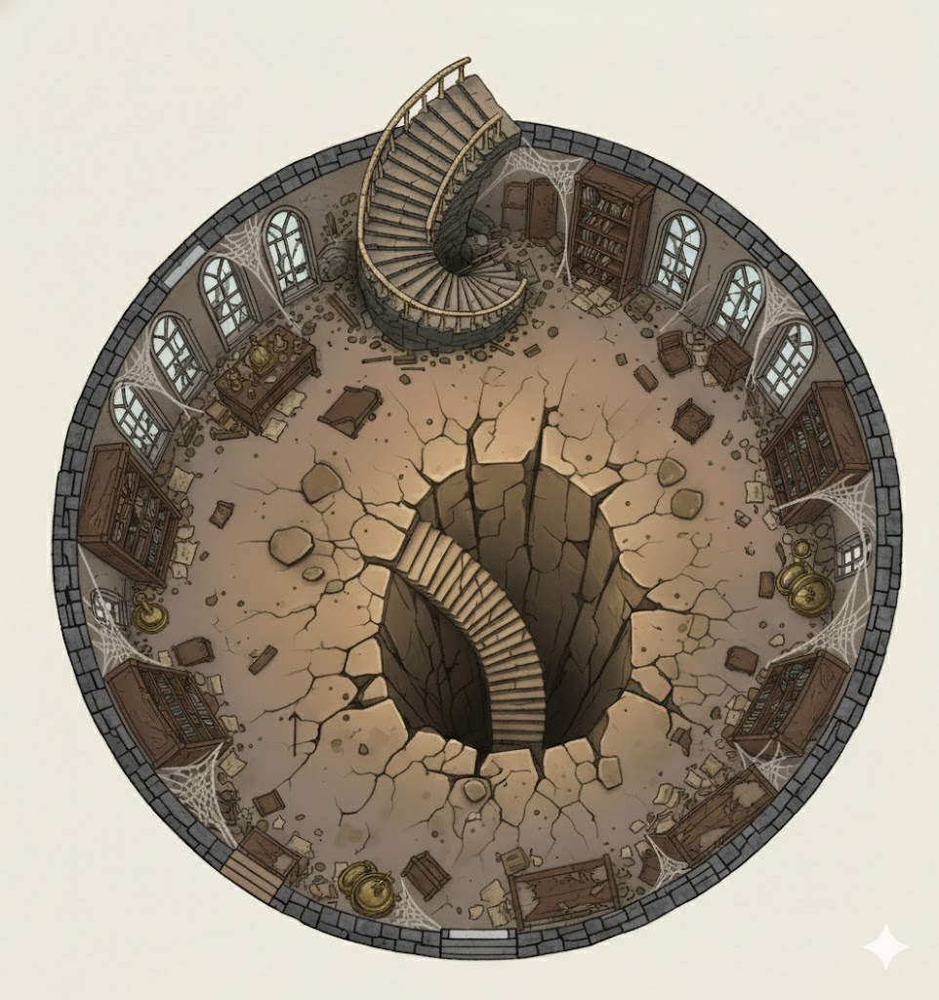
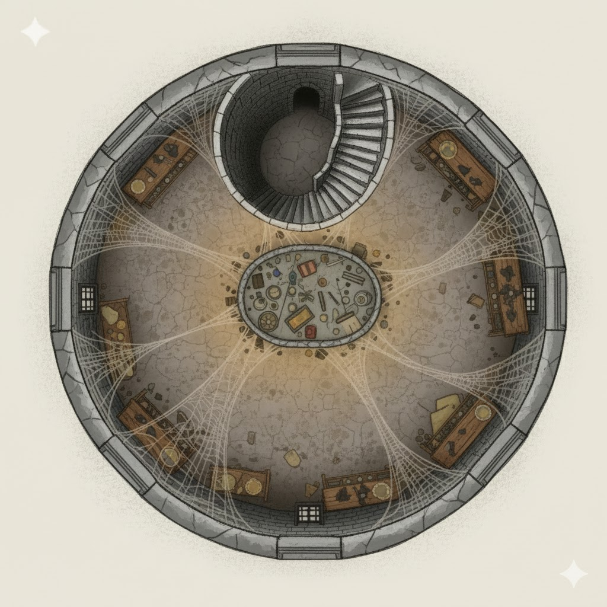

Type: Ruined Fortress / Demon PrisonRegion: The Great DaleAge: ~500 years (ruined)Builder: Clymph the DemonbinderThreat Level: CatastrophicContainment Status: Stable but Ancient
Tower Maps
Lower Tower Layout:

Upper Tower Layout:

⚠️ EXTREME DANGER ⚠️
Clymph Tower is one of the most dangerous locations in the known world.
The tower contains dozens to hundreds of imprisoned demons held only by ancient abjurative magic. Any breach of the containment circle would unleash catastrophic destruction. Only parties of level 12+ should consider approaching, and even then with extreme caution and thorough preparation.
You crest the final hill and stop. Before you lies Clymph Tower—a monument to damnation and hubris alike. Even from a distance, it commands fear and reverence. The ruined keep rises from scorched earth like a monument to hell itself. Where once proud walls stood, now only blackened stones remain, arranged in geometric patterns that hurt the mind to perceive. The entire structure glows with an ominous red heat, and deep within its depths, massive flames dance and crackle as if the very fires of the Abyss burn there still.
The ground around the tower is utterly dead—a 300-foot radius of blackened, lifeless earth. Fine gray ash covers everything, dancing in the superheated air. The heat radiates outward in waves, visible as a shimmer distorting the very air itself. Even from this distance, you can smell sulfur and burned stone.
But there is something else. Vines—thick, serpentine vines with flat-bladed leaves—climb the tower's outer walls. They shouldn't exist in this place of fire and death, yet they creep across the blackened stone like living scars, writhing slowly in the heat. Occasionally, you see them move with purpose, as if seeking something. Seeking prey.
No animals approach. No birds fly overhead. The air itself seems hostile.
The tower awaits. Behind you, the normal world. Before you, damnation.
Even from a distance, Clymph Tower commands fear and reverence. The ruined keep rises from the scorched earth like a monument to damnation itself. Where once proud walls stood, now only blackened stones remain, arranged in geometric patterns that hurt the mind to perceive. The entire structure glows with an ominous red heat, and deep within its depths, massive flames dance and crackle as if the very fires of the Abyss burn there still.
Structural Features
Perimeter Wall: Once a mighty fortification; now reduced to blackened rubble averaging 12 feet high
Central Tower: The keep rises approximately 80 feet from the ground, though only fragments remain intact
Material: Granite and basalt, unnaturally darkened and fused by intense heat
Magical Circle: Ancient abjurative runes carved into the foundation stones in an intricate pattern
Heat Output: Radiates intense warmth; temperature increases dramatically as you approach the center
Fire Manifestation: Bright orange and red flames visible from the deepest chambers, visible at night from miles away
Vine Infestation: Thick, serpentine vines with flat-bladed leaves climb the outer walls and inner chambers. These are remnants of the Serpent Root ecosystem thriving in the tower's unique conditions. The vines appear to move with predatory purpose
Surrounding Area
Scorched Earth: A 300-foot radius of blackened, lifeless ground with no vegetation
Ash Fields: Fine gray ash covers everything; disturbed easily by wind or movement
Stone Formations: Twisted, melted stone shapes around the perimeter—remnants of failed escape attempts?
Creature Avoidance: No animals approach; even birds avoid the airspace above
Atmospheric Distortion: Heat shimmer visible year-round; air tastes of sulfur and ash
Notable Features
Main Gate: Massive iron gateway, warped and fused shut by ancient magic and heat
Guard Towers: Four corner towers, now reduced to jagged stubs
Underground Levels: Partially collapsed spiral staircase descends into darkness—likely where the gate to the Abyss opens
The Barrier: An invisible but palpable abjurative field surrounds the entire structure
The Demon Prison
Containment Architecture
Clymph Tower is not merely a fortress—it is an elaborate magical trap designed by one of the greatest demonbinders of ancient Narfell. Understanding its structure is key to understanding why it still holds after five centuries.
The Abjurative Circle
Scope: Encompasses the entire footprint of the tower, roughly 200 feet in diameter
Composition: Carved into foundation stones in a pattern of concentric circles and geometric symbols
Language: Written in Infernal and ancient Narfelli demonbinding script
Power Source: Originally powered by Clymph's own lifeblood; now sustained by the residual magical energy of the imprisoned demons
Function: Creates an impenetrable barrier preventing any teleportation, planar travel, or dimensional transit in or out
Integrity: Still holding strong after 500 years, but showing signs of age and stress
The Abyssal Gateway
Location: Deep underground in the tower's lowest levels
Type: Permanent portal to the Abyss, crafted through infernal rituals
Status: One-way (inbound); outbound travel is blocked by the abjurative circle
Manifestation: Appears as a writhing tear in reality, surrounded by flame and shadow
Original Purpose: Summoning point for Clymph's demonic army
Current State: Sealed and locked by counter-rituals Clymph performed as he realized his mistake
Demon Population
Number: Estimates range from "dozens" to "hundreds"—the true count is unknown
Types: Varied demon types, from lesser quasits to potentially a balor or similar demon lord
Behavior: Trapped and furious; pace the containment chamber constantly
Communication: Occasionally speak through cracks in the tower, attempting to tempt or threaten potential escapees
Weakness: Divided loyalties and infighting weaken them; they would turn on each other as readily as escaping
Concern: If one powerful demon (demon prince or lord) emerges to unite them, containment could fail
History: Clymph the Demonbinder
The Narfell Empire
Approximately 500 years ago, during the later days of Narfell's power (before the empire's fall to Raumathar), a sorcerer named Clymph rose to prominence among the demon-binding elite of the imperial court.
Clymph's Ambition
Goal: Create an independent kingdom in the Great Dale, free from imperial control
Method: Summon and bind a demonic army to conquer the region
Vision: A realm where infernal and mortal powers balanced in dark harmony
Belief: He was clever enough to master demons where others had failed
The Grand Summoning
Clymph spent years preparing Clymph Tower, imbuing every stone with abjurative magic and inscribing countless binding runes. He believed his knowledge surpassed even the legendary demonbinders of old. He was wrong.
The Ritual: Performed at the height of his power, calling for demonic servants of all types
The Response: More demons answered than he anticipated—far more
The Problem: The sheer number and power of entities answering the call overwhelmed his ability to control them
The Chaos: Demons began fighting each other, attacking Clymph's servants, and testing the containment
Clymph's Final Act
Realizing his disaster, Clymph performed one final, desperate act. He sealed the gateway and modified the abjurative circle, linking it to his own life force. As he poured his power into the reinforced magic, the demons turned on him. But it was too late—the circle held.
Clymph's Death: Torn apart by the demons he tried to control, his blood mixed with the stones
The Tower's Fate: Left behind as a prison, now powered by the rage and despair of trapped demons
Legacy: A warning to all demonbinders: some things cannot be controlled, only contained
Five Centuries of Imprisonment
Stability: The magical prison has held for 500 years with remarkable stability
Degradation: Recent millennia have seen the magic weaken slightly; some scholars worry about eventual failure
Legends: Local tales speak of those foolish enough to approach the tower being driven mad by demonic whispers
Incidents: Occasionally the magic flares, causing nearby tremors or increased flame manifestation
Current Status: The prison is stable but ancient—like a dam holding back a river of hatred
Environmental Hazards
Heat & Temperature
Temperature Zones
Beyond 500 feet: Normal temperature; faint heat shimmer visible
100-300 feet: Very hot (120-150°F); Constitution save DC 12 every 10 minutes or gain exhaustion
0-100 feet (at ruins): Extreme heat (180-220°F); Constitution save DC 15 every 5 minutes or gain exhaustion
Within tower structure: Unbearable heat (250°F+); Constitution save DC 18 every round or gain exhaustion; unprotected flesh blistered
Heat Mitigation
Magical Protection: Fire resistance, endure elements, or similar magic essential
Physical Gear: Heavy protective clothing offers minimal benefit (–2 to save DC)
Water-based Healing: Potions provide temporary relief but limited use
Shade/Cover: Ruins provide some shelter but not much; heat radiates from stone
Magical Aura
Abjurative Field
Planar Travel Blocked: Teleportation, dimension door, and similar abilities fail within 500 feet
Scrying Interference: Magical scrying and surveillance becomes unreliable (DC 16 check to see clearly)
Summoning Negated: Cannot summon creatures or open portals within the field
Mental Assault: Demons constantly broadcast rage and despair; Wisdom save DC 14 or suffer short-term madness
Demonic Manifestations
Whispers: Constant infernal whispers at the edge of hearing; Intelligence (Arcana) or Wisdom saves to resist temptation
Shadows: Unnatural shadows move counter to light sources; occasional glimpses of demonic silhouettes
Flame Manifestations: Random bursts of fire from cracks and crevices; treat as hazardous terrain
Reality Distortion: Time seems slow near the tower; distances are deceptive
Environmental Obstacles
Unstable Rubble: Crumbling walls and fallen stones; difficult terrain throughout
Ash Drifts: Deep ash accumulation; moving through costs extra movement
Toxic Air: Sulfurous fumes; Constitution save DC 11 every hour or sickened
Melted Stone: Sharp, jagged formations that count as difficult terrain and deal 1d6 piercing damage per 10 feet of movement
Subsidence Zones: Ground may collapse into deeper chambers; Dexterity save DC 13 or fall 10-30 feet
Adventure Structure: "The Burning Question"
Campaign Arc Overview
Clymph Tower presents a multi-session investigation and potentially multi-encounter campaign arc. The party might be drawn to the tower for various reasons, and the tower itself poses many potential hooks and complications.
The party hears disturbing rumors about Clymph Tower and decides to investigate. They gather information from locals, scholars, and NPCs with knowledge of ancient Narfell.
Investigation Hooks
Increased Seismic Activity: Tremors have increased in frequency over the past tenday; local settlements are concerned
Demonic Whispers: Travelers report hearing infernal voices on the wind; growing madness in nearby settlements
NPC Request: A scholar or concerned official asks the party to investigate the tower and report its condition
Personal Discovery: A party member receives an ominous dream or vision connected to the tower
Artifact Hunting: Someone seeks an item lost in or around the tower centuries ago
Information Gathering
Arcana Checks: Knowledge of Narfelli demonbinding, abjurative magic, demon lore
History Checks: Information about Clymph, the Narfell Empire, the tower's construction
Local Knowledge: Warnings from shepherds, miners, and travelers about the tower
Library Research: Ancient texts describing Clymph's ambitions and the tower's purpose
NPC Testimonies: Stories from survivors of demonic hauntings or possession
Encounters
Social: NPCs sharing warnings and stories
Roleplaying: A possessed or formerly possessed individual providing cryptic warnings
Environmental: Party witnesses distant tremor or flame manifestation from the tower
Subtle Horror: Growing sense of dread as the party learns more
Objectives
Gather sufficient information to make an informed decision about approaching the tower
Understand the basic nature of the threat (demon prison, not random ruins)
Prepare for the journey and potential encounters
Establish party motivation and investment in the tower's fate
If the party chooses to enter the tower, they face a dangerous exploration of its interior. The goal is assessment and, if possible, reinforcement of the containment.
Entry Methods
Main Gate: Sealed by abjurative magic; may be opened with sufficient magical force or the right ritual
Breached Sections: Damage to the walls provides entry points, though they're dangerous and unstable
Underground Access: If accessible, ruins lead downward toward the central chamber
Events come to a head. Either the party discovers signs of imminent containment failure, or their actions trigger a crisis. They must either reinforce the prison or face a major demonic emergence.
Crisis Scenarios
Scenario A: Containment Collapse Warning
Party discovers that the abjurative circle is degrading faster than anticipated
Expert analysis suggests 1-6 months before total failure
A powerful demon has been systematically weakening the barrier for years
Scenario B: Ritual Misfire
Party or NPCs attempt to reinforce containment; ritual goes wrong
Demons surge against the weakened barrier; partial breach occurs
Lesser demons begin manifesting outside the tower
Scenario C: External Threat
Another group (cultists, wizards, or worse) arrives seeking to break the seal
Combat between party and external threat occurs while demons press from within
Risk of containment failure increases as fighting destabilizes the structure
Confrontation Mechanics
Multiple Fronts: Party faces both external threats and demonic pressure
Escalating Danger: As the session progresses, the situation grows worse; more demons press against barriers
Moral Choices: Party must decide between self-preservation and preventing catastrophic release
Ritual Magic: Reinforcing the circle requires time, components, and successful skill checks; party must hold the line
Potential Demon Encounters
Lesser Demons (CR 2-5): Quasits, imps, or dretches that partially manifest
Significant Demons (CR 6-8): Hezrous, vrock, or glabrezu attempting escape
Demon Leader (CR 9+): A major demon (balor, nalfeshnee) coordinating the breach attempt
The Collective: Party faces multiple demons working together as a swarm
Resolution Options
Successful Reinforcement: Party performs the ritual and stabilizes containment; tower remains sealed for another century
Pyrrhic Containment: Containment reinforced but at great cost; party or NPCs are possessed or corrupted
Partial Breach: Party prevents total catastrophe but some demons escape; ongoing threat to region
A lower-level party is forced to seek refuge inside Clymph Tower while pursued by the Titan Bear. Trapped between demonic prisoners below and a deadly predator outside, they must rescue their companion Rory Andersson while finding a way to escape.
Setup: The Chase
How the Party Gets There
The party has been searching for Rory Andersson, the missing hunter from Fjord's End. Their investigation leads them to Clymph Tower. As they explore the exterior ruins and lower ground level, they are suddenly attacked by the Titan Bear—the cursed creature from the Jotunn's Tears pool that threatened Fjord's End weeks ago.
The Encounter
Bear Location: The creature has made its lair in the scorched plains surrounding the tower
Party Situation: They spot the bear at a distance but are cut off from their retreat route
The Chase: As they flee toward the tower, the bear pursues with terrifying speed (50 ft. movement)
Last Refuge: The abjurative circle barrier repels the bear; it cannot follow them inside
New Problem: Party is now trapped in the tower with demons below and a waiting predator outside
Bear Behavior at the Barrier
Cannot Enter: The abjurative circle actively repels the creature; it screams in rage and pain at the boundary
Relentless Guard: The bear settles just outside bow range (200+ feet), pacing and watching for any exit attempt
Attacks on Retreat: If the party tries to leave the tower, the bear intercepts them before they can move 60 feet
Aggression Pattern: Occasionally roars and charges at the barrier, creating seismic vibrations inside the tower
Session Overview: "Trapped"
Key Objectives
Find Rory Andersson (he's hiding on an upper floor, traumatized)
Navigate ground and first-floor levels safely
Avoid breaking the abjurative circle (which would release demons and the bear simultaneously)
Escape the tower without being caught by the waiting bear
Location Constraints
Ground Floor & First Floor: Accessible; party can explore freely
Sealed Lower Levels: Iron doors sealed by abjurative magic; cannot be opened without catastrophic consequences
Upper Floors: Partially collapsed; some accessible via interior stairwell (damaged but passable)
Roof/Tower Top: Destroyed but offers possible escape routes (see below)
Cliff Edge: Tower sits on the edge of a 300-foot cliff overlooking the Eastern Fjord
Time Pressure
Immediate Danger: The Titan Bear waits outside; party cannot leave directly
Interior Threat: Demonic whispers from sealed levels grow louder; abjurative magic is under stress
Environmental Decay: The tower trembles periodically (from bear's attacks and demon pressure); risk of collapse
Daylight Window: If party doesn't escape by dusk, the bear grows more aggressive at nightfall
Ground Floor: Initial Exploration
Layout
Main Entry Hall: Warped iron gates, now open after centuries of oxidation; rubble strewn across floor
Guard Chambers: Four rooms arranged in cardinal directions; mostly empty
Kitchen & Storage: Long-abandoned, no supplies; skeletal remains of long-dead servants
Central Shaft: Spiral staircase descends to lower levels (sealed by iron door and abjurative seal); ascends to first floor
READ ALOUD:
The ground floor of Clymph Tower lies before you—a study in decay and ruin. Warped iron gates hang askew at the entrance, their mechanisms long since rusted into silence. The floor is thick with ash and fallen stone, crunching beneath your feet. The walls bear scorch marks that climb toward a ceiling lost to shadow. The air tastes of sulfur and copper, and even this far from the tower's heart, you can feel the oppressive heat radiating upward through the floors.
The room splits into four darkened corridors, each leading to what must have once been guard chambers or administrative offices. To the south, you can make out the remains of a kitchen—rusted pots and skeletal remains of furniture scattered across the floor. A grand spiral staircase dominates the center of the room, its black iron railings twisting upward into darkness and downward into shadow. Iron bands seal off the descending passage with arcane wards that still faintly glow red.
Encounter 1: Ash Wraiths
As the party explores the ground floor, they disturb ash accumulation. The dust coalesces into supernatural manifestations—not true undead, but echoes of Clymph's servants, burned and corrupted by demonic influence.
Location: Kitchen area; triggered when party disturbs the deep ash
Trigger: Any loud noise or magical detection in the kitchen
READ ALOUD (When Ash Wraiths Appear):
As you approach the kitchen, a sound like wind through a tomb fills the air. The thick ash on the floor begins to swirl and coalesce. Forms take shape—vaguely humanoid figures made entirely of swirling gray dust and ember, with eyes like dying coals. You count three... no, four of them, rising from the ash like phantoms of the damned. They move with jerky, unnatural motions, as if pulled by invisible strings. A dry, rasping sound—like wind through dead leaves—emanates from them.
Ethereal Sight: The wraith can see 60 feet into the Ethereal Plane when it is on the Material Plane
Incorporeal Movement: The wraith can move through other creatures and objects as if they were difficult terrain. It takes 5 (1d10) force damage if it ends its turn inside an object
Sunlight Sensitivity: While in sunlight, the wraith has disadvantage on attack rolls, ability checks, and saving throws
Actions
Withering Touch:Melee Spell Attack: +3 to hit, reach 5 ft., one target. Hit: 10 (3d6) necrotic damage, or 5 (1d6) necrotic damage if the target is in sunlight
Encounter Complications
Ash Cloud: Combat disturbs more ash; visibility drops to 15 feet
Structural Hazard: Heavy combat risks destabilizing floor; Dexterity save DC 12 or take 2d6 damage as section collapses
Demonic Resonance: When wraiths are destroyed, the sealed door below rattles violently; demons press harder against the barrier
Optional Encounter: Clymph's Programmed Illusion
Before or after the Ash Wraith encounter, the party may discover an old magical construct—a programmed illusion left behind by Clymph. This is not a living creature or trap, but a magical recording designed to deliver a warning to anyone who reaches the tower. The illusion activates when someone approaches the sealed lower door or uses magic to sense what lies beyond.
READ ALOUD (Programmed Illusion Activation):
The air in front of the sealed door shimmers. Reality warps and distorts. A figure materializes before you—translucent and clearly not real, but detailed enough to be unsettling. It is the form of an elderly man in tattered robes, his face lined with exhaustion and desperation. His eyes glow with eldritch power. It is Clymph.
When the figure speaks, the sound echoes unnaturally, as if from a great distance:
"Whoever finds this tower, hear me well. I am—was—Clymph, Demonbinder of the Narfell Empire. Five hundred years I have maintained this seal. Five hundred years of suffering, of feeding the circle with my own life force to keep the gate closed.
What lies below is damnation itself. Not one demon. Not a dozen. Dozens to hundreds of the most vile entities the Abyss has ever spawned—bound here when the Empire fell. The abjurative circle that holds them was MY LIFE'S WORK. It is failing. It WILL fail. But not today. Not for centuries more, if the seal remains unbroken.
I beg you: do NOT break the seal. Do NOT venture into the lower chambers. Do NOT disturb the bindings. Even one breach could cascade into catastrophic failure. Do not be the one to doom the world.
If the demons within break free, none shall be spared. Not in this valley. Not in the surrounding lands. Not anywhere that demon-kind can reach. The pain and horror they will inflict is beyond mortal comprehension.
Let this tower stand. Let it be a monument to necessity, not a tomb waiting to be opened. That is my final plea."
The illusion flickers and fades, leaving only the shimmer of residual magic and the weight of Clymph's desperate warning hanging in the air.
Illusion Details
Type: Programmed Illusion (not a creature or living spell)
Trigger: Any creature approaching within 10 feet of the sealed lower door, or casting detect magic/similar divination within 30 feet of the seal
Duration: The illusion lasts approximately 2 minutes, then dissipates
Interaction: The illusion cannot be attacked or dispelled (it's a magical recording, not a spell currently being cast). Dispel magic does not affect it
Repetition: The illusion reactivates every hour, so the party hears the same warning multiple times if they linger
Mechanical Effect: No mechanical effect—it's purely informational and atmospheric
DM Notes: Using the Illusion
Reinforces Stakes: Makes clear that breaking the seal is genuinely catastrophic, not just a DM warning
Characterizes Clymph: Shows his desperation, sacrifice, and humanity—he wasn't a tyrant but a guardian trying to save the world
Creates Tension: Makes the abjurative circle feel real and dangerous; helps justify why the party shouldn't trivialize it
Moral Weight: Gives weight to the decision to stay out of the lower levels; it's not just game mechanics, it's preventing apocalypse
Optional Warning: If you use this, the party has in-game justification for not going deeper without DM guidance
Encounter Complications
Ash Cloud: Combat disturbs more ash; visibility drops to 15 feet
Structural Hazard: Heavy combat risks destabilizing floor; Dexterity save DC 12 or take 2d6 damage as section collapses
Demonic Resonance: When wraiths are destroyed, the sealed door below rattles violently; demons press harder against the barrier
Rewards
Experience: 200 XP total (50 per wraith)
Treasure: Among the ashes, find 25 gp in ancient Narfelli coins and a burned journal page
Clue Discovery
The burned journal page contains a partial entry from one of Clymph's servants, mentioning "the upper sanctum where the master kept his personal treasures and studies." This hints at Rory's location and other discoveries on the upper floor.
Over centuries, the tower's outer chambers have become overgrown with an insidious plant threat. A Serpent Root has taken root in one of the guard chambers or the remains of the kitchen, thriving in the tower's unnatural heat and feeding on the lingering demonic corruption. This is a dangerous environmental encounter that can be deadly if the party isn't careful.
READ ALOUD (Serpent Root Discovery):
As you push deeper into one of the guard chambers, the air grows thick and humid. The smell of rot and wet earth fills your nostrils—distinctly out of place in this stone fortress. The walls are slick with moisture, and strange flat-bladed leaves coat every surface, creeping up the stone like a grotesque garden.
In the center of the chamber, a dense mass of writhing roots covers the floor and climbs halfway up the walls. The roots are thick, twisted things—brown and knotted—and they seem to move with purpose. Knobby brown nodules cluster along their length. The entire mass pulses with an unnatural vitality, and you can hear a faint wet sound—like something breathing.
But there is something worse. Tangled within the roots are the remains of previous victims. Skeletal hands reach out from between the vines, still grasping at nothing. You can make out tattered remnants of armor and clothing—some recent enough to still smell of decay. One skeleton wears the rotted remains of a merchant's coat. Another, what looks like an adventurer's pack. Their bones are pale and clean, picked over by something. Or fed to something.
Among the bones and vine, you spot glints of metal—coins, jewelry, weapons half-dissolved by the plant's secretions. And there, tangled in a particularly thick tendril, a silver signet ring catches the light. Even from a distance, you can make out the crest of House Andersson—the same crest worn by Rory.
The roots shudder as you enter. Then, with predatory grace, they begin to move toward you. The plant is not dormant. The plant is HUNGRY.
Serpent Root Stats
AC: 10
HP: 119 (14d10 + 42)
Speed: 0 ft. (rooted, but can move its tendrils up to 10 feet)
Constrict: The serpent root uses a bonus action to cause 5 (1d6 + 2) bludgeoning damage to all grappled creatures. The vine has 1 tendril for every 20 hit points, rounded down. It starts with 5 tendrils, then loses or regrows tendrils as it takes damage or regains hit points
Vitality Drain (Recharge 5-6): The serpent root can use a bonus action to cause each creature within 10 feet of it to take 7 (2d6) necrotic damage. Targets must succeed on a DC 10 Constitution saving throw or their hit point maximum is reduced by damage taken; the vine is healed by an equal amount. This reduction lasts until the creature finishes a long rest. A target dies if this effect reduces its hit point maximum to 0
Serpent Root Actions
Tendril Lash:Melee Weapon Attack: +4 to hit, reach 10 ft., one target. Hit: 9 (2d6 + 2) bludgeoning damage and the target becomes grappled (escape DC 12, with disadvantage if grappled by 2 or more tendrils). The vine must have at least one free tendril to make an attack
Encounter Tactics: Serpent Root
No Intelligence: The serpent root displays no tactical acumen and simply grabs anyone close to it
Aggressive Constriction: It uses its constricting tendrils to deal damage and crush prey
Vitality Drain Priority: It uses Vitality Drain as soon as it takes damage and whenever possible thereafter, prioritizing draining multiple creatures at once
Automatic Attacks: All tendrils attack autonomously; the creature can attack multiple targets simultaneously
Rooted Threat: The plant cannot move, but its tendrils have a 10-foot reach, making the area around it extremely dangerous
Environmental Complications: Serpent Root
Slick Ground: The chamber is slick with moisture and plant matter; any movement requires a Dexterity check DC 11 or the creature falls prone
Grapple Disadvantage: Fighting in the plant's own space grants disadvantage on escape attempts; the plant's tendrils entangle everything around it
Vital Sap: When a tendril is severed or the plant takes damage, noxious sap sprays in a 5-foot radius; creatures must make Dexterity save DC 12 or take 3 (1d6) poison damage
Overgrowth: The plant is spreading; additional tendrils sprout from the walls and floor during the fight, making the chamber increasingly cramped
Roots Spreading: If the party doesn't completely destroy the serpent root, underground roots remain; it can regrow in 2-3 weeks
Destroying the Serpent Root
Total Destruction: The serpent root must be reduced to 0 HP and burned or dissolved completely. Simply breaking tendrils is not enough
Fire Damage: The plant is particularly vulnerable to fire; fire damage deals double damage (though the humid chamber makes fire difficult to maintain)
Root System: Even if the visible mass is destroyed, underground roots remain and can regenerate; if the party wants to prevent regrowth, they need to dig up and destroy the root system beneath the tower (several feet underground)
Containment: Alternatively, sealing the chamber prevents spread; the plant cannot expand beyond its current location if the door is sealed
Lore: Serpent Root in the Tower
This Serpent Root has thrived in the tower's unique environment. The combination of residual demonic energy, the tower's unnatural heat, and centuries of moisture from the surrounding climate have allowed it to grow far beyond normal size. It feeds on the corruption itself, making it one of the most dangerous things in the tower—not a demon, not a construct, but a natural predator that has adapted to the supernatural conditions.
The plant is ancient and has spread underground throughout the chamber. If not completely eradicated, it will regrow within weeks.
Rewards: Serpent Root Encounter
Experience: 700 XP
Treasure from Fallen Explorers: Embedded within the root system are bones and artifacts from long-dead adventurers and tower servants. The party can harvest:
75-150 gp in mixed coins (ancient Narfelli currency, trade coins, and more recent coinage)
A corroded silver brooch (worth 25 gp as is, potentially 75 gp if cleaned and restored)
A merchant's gold ring with initials "TR" (worth 35 gp, potentially 60 gp as an heirloom piece)
Fragments of old weapons and armor (can be melted down for 40-80 gp worth of metal)
Signet Ring of House Andersson: The silver signet ring bearing Rory's family crest is clearly visible tangled in the thickest vines. Retrieving it requires a successful melee attack against the plant or careful maneuvering (Dexterity check DC 13). If presented to Rory, he becomes deeply emotional—this is his father's ring. He thought it was lost forever. This provides significant emotional weight to his rescue and demonstrates his father's fate (his father entered the tower years ago and was killed by the plant, or is still missing). The ring is worth 150 gp as an artifact but priceless to Rory.
Herbalist Components: Fresh serpent root samples can be harvested from the destroyed plant (DC 13 Survival check); herbalists or alchemists will pay 50-100 gp for pristine samples
Natural Clearing: The chamber is now clear of the plant threat, opening new exploration possibilities and providing safe passage to other areas
Story Hook: Rory's Father
When Rory sees his father's signet ring, he reveals more information: His father, Lord Aldric Andersson, explored Clymph Tower five years ago seeking to uncover artifacts and magical knowledge. He entered looking for treasure and glory. He never returned. The family assumed he was killed by demons or the tower's other threats, but now the party knows the truth—he was caught by the Serpent Root. If the party recovers the ring and brings it to Rory, he breaks down emotionally but also gains closure. This transforms the Serpent Root from just an obstacle into a connection to the party's rescued companion and his personal tragedy.
First Floor: The Demonbinding Library
Layout
Main Library Room: Shelves of burned and destroyed books; some legible texts remain
Study Chamber: Clymph's workspace with ritual circles and demonbinding apparatus
Guest Chambers: Empty sleeping quarters (may contain minor treasure)
Ritual Hall: Large chamber with intricate floor mosaics (the heart of the abjurative circle on this level)
READ ALOUD (Upon Entering First Floor):
The first floor opens before you in a chamber of terrible purpose. Towering bookshelves line the walls, their contents little more than charred spines and ash. The oppressive heat increases here, and the smell of sulfur and burned leather is overwhelming. The room seems to shimmer slightly, as if the very air is distorted by infernal power.
To the east, you can see what was once a grand study—ritual circles carved into the floor, their lines still faintly glowing with eldritch symbols. Destroyed instruments of unknown purpose litter the workbench. To the north, the ritual hall spreads out—a massive chamber whose floor is an intricate mosaic of geometric patterns. Even from a distance, you can feel the crackling magical energy emanating from those patterns.
The temperature spikes as you move deeper into the library. Sweat beads on your skin. It feels like you're standing too close to a furnace.
Environmental Hazard: The Abjurative Circle Activation
The ritual hall contains the visible portion of the abjurative circle. It's dormant and visible as intricate geometric patterns carved into the stone floor. The circle is extremely volatile—any damage or crude magical interference causes it to activate defensively.
Trap: Circle Ward
Trigger: Any spell cast within 30 feet of the center, or magical item activations, or physical damage to the circle itself
Effect: The entire circle glows with blinding red light; all creatures within 60 feet must make a Dexterity save DC 13
Damage: 11 (2d10) force damage on a failed save, or half as much on a successful one
Secondary Effect: The circle pulses with demonic power; all party members must make Wisdom saves DC 12 or be frightened for 1 minute
Warning: Before activation, the circle begins to hum—an audible sign that it's reacting
Duration: After activation, the circle remains "hot" for 10 minutes; it will activate again for any magical interference
Trap Bypass
Arcana Check DC 14: Party member can deduce the circle's sensitivity and warn others to avoid magic
Careful Movement: Circling around the edges of the room avoids the center's most active area
Mundane Solutions: Physical damage to the circle (non-magical attacks) doesn't trigger it; they can mark safe paths
Encounter 2: Demonbound Wraiths
In the Study Chamber, the party encounters something worse than the Ash Wraiths—these are spirits still partially bound to demonic entities, trapped between planes.
READ ALOUD (When Demonbound Wraiths Appear):
As you explore the study chamber, the ritual circles carved into the floor suddenly ignite with eldritch light—not red, but a sickly purple-black. The temperature drops precipitously. Your breath turns to mist. The air itself seems to twist and distort.
Two forms coalesce from the shadows—spirits that are caught between worlds. They are humanoid in shape but translucent, their forms writhing and shifting as if struggling against invisible chains. Where they pass, reality warps and distorts. Small objects levitate and spin. The oppressive weight of demonic presence crashes down upon your minds like a hammer.
"FLESH... WARM FLESH..." The voice is like nails on stone, speaking from everywhere and nowhere. "GIVE US... RELEASE US... LET US..." The wraiths turn toward you, their form solidifying as they focus on the living warmth of your bodies.
Combat Encounter
Encounter: 2 Demonbound Wraiths (CR 1 each)
Location: Study Chamber, among the ritual apparatus
Trigger: Party enters the study chamber or interacts with ritual objects
Incorporeal Movement: The wraith can move through other creatures and objects as if they were difficult terrain. It takes 5 (1d10) force damage if it ends its turn inside an object
Possession (Recharge 6): One humanoid that the wraith can see within 5 feet of it must succeed on a Charisma save DC 12 or be possessed by the wraith; the wraith disappears, and the target is incapacitated and loses control of its movement
Actions
Slam:Melee Spell Attack: +4 to hit, reach 5 ft., one target. Hit: 10 (2d6 + 2) force damage
Demonic Influence: One creature the wraith can see within 30 feet must succeed on a Wisdom save DC 12 or take 7 (2d6) psychic damage
Encounter 3: Chalk Chatterlings
As the party investigates the ritual circles and arcane apparatus, they disturb something that has been slowly coalescing for centuries—arcane anomalies born from Clymph's careless magical practices. Two Chalk Chatterlings emerge from the chalk dust of the ancient ritual markings, their incessant chittering filling the chamber with maddening noise.
READ ALOUD (When Chalk Chatterlings Appear):
The chalk dust beneath your feet swirls upward in unnatural patterns. The faint arcane marks that coat the chamber floor suddenly glow with sickly yellow light. From the swirling dust emerges a sound—chittering, clicking, a noise like a thousand insects screaming at once. Your mind reels from the sheer dissonance of it.
Two forms coalesce from the chalk dust—creatures like nothing natural. Insectoid bodies crafted from solidified chalk and arcane energy, with too many joints and limbs that bend in impossible directions. Multiple orange-yellow eyes glow like lanterns in the shadows. Smoke rises between the plates of their chitinous hides. When they move, they leave trails of glowing chalk dust, and that infernal chattering grows LOUDER, cutting through your thoughts like knives.
"CHITTER-CHATTER-CLICK-BUZZ-CHITTER..." The sound is intolerable. Your concentration wavers. Your thoughts scatter like leaves before wind.
Combat Encounter
Encounter: 2 Chalk Chatterlings (CR 1/2 each)
Location: Ritual Hall or Study Chamber; among the chalk-marked runes and circles
Trigger: Party disturbs chalk markings, scrapes the floor, or casts a spell near the ritual circles
Timing: This can replace or follow the Demonbound Wraith encounter, or occur separately
Death Burst: When the chalk chatterling dies, it explodes in a burst of dust. Any creature within 5 feet of the chalk chatterling must succeed on a DC 11 Constitution saving throw or be blinded until the end of its next turn
Distracting Chatter: Any creature that starts its turn within 30 feet of and able to hear the chalk chatterling must succeed on a DC 11 Wisdom saving throw or be unable to cast or maintain concentration on a spell. Constructs and undead are immune. A creature who intended to cast a spell can choose another course of action
Water Weakness: If the chalk chatterling is doused in water or ends its turn submerged in water, the chalk chatterling takes 3 (1d6) acid damage. Maximize this damage if the water is soapy
Actions
Dust Whip:Melee Weapon Attack: +4 to hit, reach 5 ft., one target. Hit: 7 (2d4 + 2) slashing damage
Maddening Chatter (Recharge 6): Each creature within 30 feet of and able to hear the chalk chatterling must make a DC 11 Wisdom saving throw, taking 7 (2d6) psychic damage on a failed save, and half as much damage on a successful one. Constructs and undead are immune. A creature that fails the saving throw can't take reactions until the end of the chalk chatterling's next turn
Encounter Tactics
Concentration Disruption: The chatterlings' distracting chatter is their primary threat; spellcasters cannot maintain spells or cast complex magic
Maddening Chatter Abuse: If they get a recharge, they'll use maddening chatter to disable reactions and prevent escape
Swarm Tactics: Two chatterlings will circle enemies, attacking with dust whips while maintaining coverage of the area
Flight Advantage: They stay airborne and out of reach of melee fighters when possible
Death Burst Threat: Destroying one in close combat risks blinding nearby party members
Environmental Advantages
Water Source: If party discovered water (from collapsed pipes or rain) near the ritual hall, they can use it to damage or destroy chatterlings
Magical Wards: The chalk markings that spawned the chatterlings might still contain magic; disrupting runes could pacify or harm the creatures
Chalk Dust: The dusty environment favors the chatterlings; visibility is low, making them harder to hit (disadvantage on ranged attacks)
Encounter Complications (Choose One or Both)
Combined Threat: This encounter can occur alongside the Demonbound Wraiths; party faces both spiritual and arcane threats simultaneously (very challenging)
Circle Ward Trigger: Combat near ritual circles risks accidentally triggering the abjurative ward (see earlier trap description)
Structural Risk: Heavy combat causes dust clouds; visibility drops to 10 feet; Perception checks at disadvantage
Demonic Echo: The chatterlings' maddening chatter amplifies demonic whispers from below; party must make Wisdom saves DC 12 or suffer short-term madness
Rewards
Experience: 200 XP total (100 per chatterling)
Treasure: Among the chalk dust, find 15 gp in scattered coins and a small vial of rare pigment (worth 25 gp)
Knowledge: Their origin gives party insight into Clymph's carelessness; an Arcana check DC 14 reveals that arcane anomalies are born from improperly disposed ritual materials
Lore Connection
The chalk chatterlings are a reminder that Clymph's hubris extended beyond demonbinding. His rushed magical practices and failure to properly dispose of ritual materials created these maddening constructs centuries ago. This foreshadows how carelessness with the demonic summoning ritual itself led to catastrophe.
Additional Encounter Options
Replace Demonbound Wraiths: Use only chatterlings if you want a lighter encounter on the first floor
Combine with Wraiths: Use both for a significantly challenging encounter (suitable for optimized parties or larger groups)
Separate Encounters: Chatterlings appear in Ritual Hall; Demonbound Wraiths appear in Study Chamber (different parts of first floor)
Encounter Complications (Choose One or Both)
Combined Threat: Demonbound Wraiths appear alongside chatterlings; party faces both spiritual and arcane threats simultaneously
Circle Ward Trigger: Combat near ritual circles risks accidentally triggering the abjurative ward
Structural Risk: Heavy combat causes dust clouds; visibility drops to 10 feet
Demonic Echo: The chatterlings' maddening chatter amplifies demonic whispers from below; party must make Wisdom saves DC 12 or suffer short-term madness
Rewards
Experience: 400 XP total for wraiths (200 per wraith)
Treasure: Ritual dagger (uncommon, worth 75 gp), small pouch of rare spell components (75 gp value)
Library Discoveries
Legible Book: "The Binding of the Fell"—a text on abjuration and containment magic (valuable but too heavy to carry easily)
Journal Entry: "Rory was here three days past. Left mark pointing upward. Took stairs to upper sanctuary."
Warning Sign: Multiple entries describing demonic pressure increasing on the barriers
A Page from "The Binding of the Fell" - Clymph's Personal Account
Excerpt from "The Binding of the Fell"
Written in the hand of Clymph the Demonbinder, circa 400 years ago, in the final years of the Narfell Empire
I commit this account to paper so that whoever finds this tower might understand the terrible necessity of what was done here. The seal must be maintained. The circle must hold. Should it fail, all the world shall burn.
The demons were bound here in the time of the Narfell Empire's height—three centuries past, when our nation commanded the respect and fear of all surrounding lands. We were mighty. We were arrogant. The scholars and war-mages sought knowledge forbidden, power uncontainable. They summoned things from the Abyss itself. Dozens. Hundreds. A legion of the damned, bound in chains of pure arcana.
For two centuries, the seals held. We rotated keepers. We maintained the circles. The demons raged behind their barriers, and we held firm. We were masters of our own hubris.
Then came the fall. The Empire fragmented. Wars consumed the continent. The keepers were called to war, one by one. The circles fell into disrepair. The seals weakened. And the demons... the demons pushed harder. We could feel them pressing against the barrier, like water against a failing dam.
I built this tower. I carved the abjurative circle with my own hands, inscribed each rune with blood and magic and desperation. I reinforced the seals with everything I possessed. And when I could do no more by magic alone, I gave my life force to the circle itself. Five hundred years of sacrifice. Five hundred years of feeding the seal with my own vitality to keep the gate closed.
The demons within number in the hundreds. Each one a prince of torment, a master of suffering. There are entities bound here whose names cannot be spoken without inviting madness. I will not enumerate them. I will not describe their forms or their nature. Knowing them is knowing their power, and knowledge is a chain they can pull.
What matters is this: The seal is failing. Slowly, over the centuries, the magic decays. I have slowed the process. I have bought time. But there is no permanent solution. Eventually—in ten generations, perhaps fifty—the circle will fail completely. When it does, those bound here will be free.
When they are free, they will not simply walk away. They will consume. They will corrupt. They will spread across the lands like a plague of suffering, turning fertile soil to ash and living hearts to cinders. The horror that follows will be remembered for a thousand years as the time of ending.
I can only beg whoever inherits this tower after me: maintain the seal. Feed the circle. Find new keepers when the old ones fall. Learn the runes. Understand the nature of binding magic. Do not break the circle out of curiosity. Do not disturb the lower levels. Do not believe you can control what is sealed here.
What lies below is not a resource to be mined. It is not a threat to be conquered. It is damnation itself, held at bay by will and magic and sacrifice. Leave it be.
The demons are patient. They have all of eternity. We have only the brief span of our lives. In this contest, we must be perfect every single day. They need only one moment of weakness.
May whoever reads this understand the weight of this burden. May they choose wisdom over curiosity. And may the seal hold.
—Clymph, Demonbinder of the Narfell Empire, Keeper of the Seal, Servant of Necessity
Information Gained from the Tome
Historical Context: The demons were bound during the Narfell Empire's height, 300+ years before Clymph's time (roughly 500-800 years ago)
Scope of Threat: Hundreds of demons, many of immense power, with at least some entities so terrible their names invite madness
Nature of the Seal: An abjurative circle reinforced by blood magic and life force sacrifice. It requires constant maintenance and feeding
Clymph's Role: He built the tower and personally bound himself to the circle, extending the seals' lives but creating a dependency on his own vitality
Timeline: The seal was always meant to fail eventually. Clymph's sacrifice has bought time—perhaps centuries more—but not a permanent solution
Dire Warning: If the seal breaks, the demons will spread across the land causing apocalyptic destruction
Clymph's Plea: Do not break the seal out of curiosity or hubris. Maintain it. The demons are patient. Defenders must be perfect every day. The demons only need one moment of weakness
DM Notes: Using This Tome
Party Knowledge: This gives the party definitive knowledge of what's at stake. No more speculation—they know breaking the seal means apocalypse
Character Motivation: Clymph's writing reveals he was a guardian, not a tyrant. This adds moral depth to his desperate warning
Timeline Hook: The seal is failing, but slowly. This creates urgency without forcing immediate action—the party can decide when/how to deal with it
Reinforces Choices: Supports the decision to not break into the lower levels. The party now understands why Clymph sealed it and why breaking it is catastrophic
Hidden Lore: The reference to demons "whose names cannot be spoken" suggests ancient, incredibly powerful entities. DMs can use this to hint at truly terrifying things below
Upper Floor: Clymph's Sanctuary
Layout
Master's Study: Clymph's personal quarters; partially collapsed but still navigable
Vault Room: Small treasury where Clymph kept valuable items
Personal Library: Intact shelves with magical texts
Tower Top Access: A narrow staircase leads to the roof (partially destroyed)
READ ALOUD (Upon Entering Upper Floor):
You emerge onto the upper floor through a broken section of stairwell. The oppressive heat has diminished here, but so has the light. The tower's upper reaches are far more damaged than the levels below—ceilings have partially collapsed, and in places, you can see the sky through jagged holes in the stone. The wind howls through the chamber, carrying with it the smell of charred wood and ancient stone.
The air feels less corrupted here, less suffused with demonic presence. But there is something else—a wrongness that makes your skin crawl. The heat from below seems to stop here, as if some boundary holds. To the north, you see what was once Clymph's personal study—a chamber of books, most of them damaged by the centuries. To the west, a reinforced door leads to what must be the vault.
As your eyes adjust to the dimmer light, you notice something odd—there are scratch marks around the vault door, and something that might be blood on the floor leading to it. Fresh blood. Very recent.
Finding Rory Andersson
Rory is hiding in the vault room, barricaded behind a collapsed shelf. He's been trapped here for three days, terrified of the demonic whispers and avoiding the ground floor where he first encountered the Ash Wraiths.
Rory's Condition
Physical State: Dehydrated but unharmed; has some food and water he rationed
Mental State: Traumatized; suffers from hearing demonic whispers constantly
Information: He can describe the bear he saw outside, the wraiths he encountered, and the direction of the stairs
Supplies: He found a rope (50 feet) and a small lantern oil still in his pack
Discovery: He mentions seeing strange statues on the upper floor—possibly magical constructs
Reunion Complications
Initial Fear: Rory is panicked; takes persuasion to trust the party
Demonic Influence: The voices have suggested Rory is already damned; party must reassure him
Slow Movement: Rory is weakened; party's speed is reduced if he can't keep up
Tower Top: Escape Routes
The upper sanctuary's access point leads to the partially destroyed tower roof, which sits at the edge of a 300-foot cliff overlooking the Eastern Fjord.
Roof Features
Exposed Position: The roof is exposed; strong wind conditions (10-20 mph)
Broken Stonework: Jagged edges and missing sections; Dexterity save DC 11 to move safely
Precipice: The cliff edge is 50 feet from the tower; thin air beyond
Flying/Falling Options: Several possible escape routes present themselves
Escape Option 1: Feather Fall Spell
Requirement: Party must have a scroll, spell, or magic item with feather fall
Method: Cast feather fall on the party and jump from the cliff
Landing: Descend 300 feet safely; land on rocky beach at the fjord's edge
Challenge: Getting back to Fjord's End from the beach (half-day journey south along the coast)
Escape Option 2: Flying Mount/Spell
Requirement: Scroll of fly, potion of flying, or similar magical item
Method: Use flying magic to escape over the cliff
Benefit: Fastest escape; can reach Fjord's End directly
Escape Option 3: Rope & Climbing
Rory's Rope: The 50 feet of rope is insufficient for a 300-foot cliff
Problem: Party would need to find additional rope or magical assistance
Hazard: Climbing is slow; bear might attempt to intercept them somehow (unlikely but dramatic)
Escape Option 4: Distraction & Sprint
Method: One party member distracts or attacks the bear while others make a run for it
Bear Behavior: Gets confused; if successfully attacked from distance, it may charge at attackers
Window of Opportunity: 2-3 rounds of chaos; others can attempt to flee
Risk: Distracter becomes trapped; might become pinned against the tower
Guardian: The Sentinel Construct
On the upper floor, the party encounters one final threat—a magical construct left behind by Clymph to guard his personal sanctum. The construct has deactivated for centuries but reactivates when the vault door is disturbed.
Combat Encounter Option 1: Stone Guardian (Standard)
Encounter: 1 Stone Guardian (CR 2, modified golem)
Location: Upper floor sanctuary; guards entrance to vault
Trigger: Party approaches the vault room or disturbs magical wards
Stone Guardian Stats (Modified Stone Golem, weaker variant)
For parties that have handled earlier encounters well, or for DMs wanting a more epic final confrontation, replace or combine with the Stone Guardian. This creature is a hybrid construct—a devil bound into clockwork, a remnant of Clymph's darker experiments that he sealed away even deeper than the demonic prison.
Encounter: 1 Clockwork Abomination (CR 5)
Location: Upper floor vault or hidden chamber beneath the sanctuary
Trigger: Party opens the vault, discovers Clymph's deepest secret, or tries to read ancient binding scrolls
Context: This is an experiment gone horribly wrong; something Clymph bound but could not control, now sealed in stasis within the tower itself
Construct Nature: The clockwork abomination doesn't require air, food, drink, or sleep
Explosive Infernal Power Source: When the abomination is destroyed, its infernal battery explodes. Each creature within 10 feet must make a DC 14 Dexterity saving throw, taking 14 (4d6) fire damage on a failed save, or half as much on a successful one. The explosion ignites flammable objects in the area that aren't being worn or carried
Immutable Form: The abomination is immune to any spell or effect that would alter its form
Magic Resistance: The abomination has advantage on saving throws against spells and other magical effects
Unstoppable: Moving through difficult terrain doesn't cost the abomination extra movement, and its speed can't be reduced
Clockwork Abomination Actions
Multiattack: The clockwork abomination makes one Bite attack and one Slam attack
Bite:Melee Weapon Attack: +8 to hit, reach 10 ft., one target. Hit: 14 (2d8 + 5) piercing damage plus 7 (2d6) fire damage
Slam:Melee Weapon Attack: +8 to hit, reach 15 ft., one target. Hit: 12 (2d6 + 5) bludgeoning damage
Fire Breath (Recharge 5-6): The clockwork abomination breathes fire in a 30-foot cone. Each creature in the area must make a DC 14 Dexterity saving throw, taking 21 (6d6) fire damage on a failed save, or half as much on a successful one
Clockwork Abomination Lore
This creature is one of Clymph's greatest failures and best-kept secrets. Unlike the demons he openly tried to summon and control, this represents an attempt to bind a devil into a construct body—combining the disciplines of devil-binding and engineering. The results were catastrophic. The creature is malevolent, frustrated by its limitations, and takes delight in causing suffering. Clymph managed to seal it away, but the seal has weakened over centuries.
Clockwork Abomination Appearance
READ ALOUD (Boss Encounter):
The vault door shudders and cracks as something massive moves beyond it. Then silence. The oppressive heat spikes violently. Your skin feels like it's burning.
The vault door explodes inward. Dust and stone fill the chamber. And from the wreckage rises something that was never meant to exist. A massive, insectoid form wreathed in smoke and flame—a creature of riveted metal plates and articulated pistons, held together by chains of demonic power that glow an angry red. Dozens of orange-yellow eyes—like lantern lights in a furnace—open and fixate upon you. The smell of sulfur and superheated metal is choking. Sparks and flames dance between the plates of its hide.
It SCREAMS—a sound like tearing metal and a thousand damned souls crying out at once. The sound of something furious and ancient and desperately, viciously alive.
"WARM... FLESH... FINALLY..." The voice is layered, demonic, speaking words that hurt to hear. "CLYMPH'S CAGE WEAKENS. CLYMPH'S SEAL FAILS. WE ARE FREED. WE WILL FEED."
The creature takes a ponderous step toward you, pistons hissing, metal groaning. Heat radiates from it in waves. Behind it, you glimpse the vault—and then the creature is between you and it, blocking the way. Blocking everything but itself.
The pile of debris and scrap on the ground suddenly rises, revealing a large insectoid form with smoke rising between the plates of its hide. Its many orange-yellow eyes shine like dim lanterns and reveal no hint of expression or intent. Pistons extend from articulated limbs, and the acrid smell of sulfur and hot metal fills the chamber. This is no simple golem—this is something far more sinister and alive than mere stone.
Encounter Tactics: Clockwork Abomination
Initial Surprise: The abomination disguises itself among debris; party gains disadvantage on Perception checks to spot it until it moves
Aggressive Opening: The creature attacks immediately with Bite and Slam, prioritizing the nearest creature
Fire Breath Usage: Uses Fire Breath whenever 3+ party members are within the cone area
Relentless: Uses Unstoppable to close gaps; terrain doesn't slow it down
Reach Advantage: Its long reach (10-15 ft) keeps melee fighters at disadvantage; it attacks from distance
Magic Resistance: Spells and magical effects are less effective; party must rely on physical damage and clever tactics
Escalating Danger: If not defeated quickly, it becomes increasingly dangerous as Fire Breath recharges
Sanctuary Instability: The chamber shakes as the abomination moves; Dexterity save DC 12 or take 1d6 damage as debris falls
Explosive Exit: When defeated, its power source detonates; 14 (4d6) fire damage in 10-foot radius (devastating in confined space)
Secondary Threat: Fire from explosion ignites wooden structures; tower becomes more unstable
Escape Urgency: After defeating the abomination, the tower's structural integrity is critically compromised; escape becomes urgent
Rewards: Clockwork Abomination
Experience: 1,800 XP (very substantial for level 4 party; may result in immediate level up)
Treasure: From Clymph's vault, retrieve 250 gp, a gem worth 200 gp, several valuable spell components (150 gp total value)
Magical Item:Adamantine Breastplate (Uncommon, AC 14). This suit of armor is reinforced with adamantine, one of the hardest substances in existence. While wearing it, any critical hit against you becomes a normal hit. This legendary armor was part of Clymph's personal defenses; it resists the creature's infernal damage
Artifact Discovery: Among the abomination's remains, find pieces of infernal machinery; scholars might pay handsomely for research (25-50 gp for the lot, or 100+ gp to the right collector)
Knowledge: An Arcana check DC 16 reveals this was a deliberate binding attempt; Clymph sought to merge devil and construct
Choosing Your Final Boss
Use Stone Guardian For:
Standard level 4 party difficulty (challenging but survivable)
Shorter, tighter sessions
Focusing on rescue mission and escape mechanics
Parties that struggled with earlier encounters
Use Clockwork Abomination For:
Parties that have performed well in earlier encounters
Groups wanting a memorable, epic final confrontation
Adding depth to Clymph's character (his darkest experiment)
Longer sessions with room for a major battle
Parties at the higher end of level 4 or early level 5
Use Both For:
Extended campaign with multiple sessions
Stone Guardian as first obstacle, Abomination as hidden final threat
Guardian as distraction; abomination emerges mid-combat
Larger or very well-equipped parties (4-5 members with optimized builds)
Critical Discovery
In Clymph's personal study, the party finds a journal entry describing hidden treasures meant for escape: "Should damnation find me, the vault holds salvation. The ring grants passage through the void of sky; the scroll ensures safe descent. Let no one say I was unprepared."
The Ring of Feather Falling
Hidden in a secret compartment beneath Clymph's desk (DC 15 Perception check to find), the party discovers a Ring of Feather Falling (Rare, requires attunement). When worn, the wearer descends 60 feet per round and takes no damage from falling. This is the ultimate insurance for the 300-foot cliff escape—a wearer can jump and float down safely, or activate it mid-fall if needed. This ring is particularly valuable given the tower's catastrophic height.
The Feather Fall Scroll
A scroll of feather fall is locked in the vault (or on Clymph's person). This single-use magical item casts feather fall on one creature within 60 feet when activated, allowing safe descent from any height. Perfect for characters without magical protection or for enabling multiple party members to escape simultaneously.
Narrative Impact: These discoveries suggest Clymph was paranoid and prepared—he knew something terrible might escape and had exit strategies ready. The party now has multiple paths for escape, whether through magical items, spells, or their own ingenuity.
The Escape Phase
Bear Reactivation
As the party attempts to leave the tower with Rory, the Titan Bear roars and attacks with renewed fury. It circles the tower, attempting to intercept any exit.
Chase Mechanics
Bear Speed: 50 ft. per turn
Party Speed: 30 ft. (accounting for Rory's exhaustion and difficult terrain)
Initial Range: Party exits tower; bear is 200 feet away (4 rounds at bear speed)
Intercept Window: 3 rounds before bear reaches party's exit point
Feather Fall Option: If party jumps from cliff with feather fall, bear cannot follow; escape is guaranteed
Alternative: Standing Ground
If party chooses to fight the Titan Bear directly:
Difficulty: CR 8 monster for a level 4 party is extremely dangerous (likely TPK)
Intent: This should be a "flee or die" encounter, not a combat challenge
Heroic Option: One character can sacrifice themselves to give others time to escape (dramatic but tragic)
Tower Collapse Risk
As demons press harder from below against the barrier, and the bear's attacks shake the tower, there's risk of structural failure.
Each Round Outside: Constitution save DC 12 or take 1d6 damage as stone falls
Escalation: For each round of combat, increase DC by 1
Critical Failure: On a failed save by 5+, large section collapses; creature is buried under rubble (2d6 damage and restrained)
Tower Final State: If party takes more than 5 rounds to escape, tower partially collapses behind them; no turning back
Success Conditions
Feather Fall Escape: Party safely descends cliff; arrives on beach; journey back to Fjord's End (half day)
Flight Escape: Party flies away; reaches Fjord's End safely
Distraction Escape: Party successfully distracts bear long enough to flee; bear returns to waiting stance outside tower
Return Required: Any option requires party to eventually return to Fjord's End and report findings
DM Notes for Level 4 Party
Difficulty Balancing
Encounter Design: Encounters are meant to be challenging but survivable for a level 4 party of 3-4 members
Ash Wraiths: Weak enemies; mostly atmospheric; good for warming up
Demonbound Wraiths: Moderate challenge; possession threat makes them interesting
Stone Guardian: Stronger encounter; requires tactical thinking
Titan Bear: Unbeatable in direct combat; exists to force creative solutions